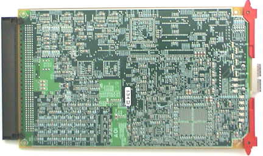

Operating Documentation
Direction 5193891-800, Rev# 5
LightSpeed 5.X Pro16 Limited Access Service Information (Adv)
Operating Documentation |
There are three connectors on the MDAS 16 DCB for normal operation: A TX optical cable connector for high speed serial data transmission to the slip ring, a RX optical cable connector for external loop-back testing, and a backplane connector for data and control signals to/from the Converter cards, signals from the Generator, RS232 interface to the Detector Heater Control Board (DHCB) .
Illustration 1: DAS Control Board Layout

Table 1: DAS Control Board - Switch. Connector & Test Point Descriptions
| Item | Label | Description |
|---|---|---|
| S1 | S1 | DCB Board Reset switch |
| TX | Fiber Optic, High Speed Serial DAS Data Out | |
| RX | Fiber optic, High Speed Serial DAS Data In. (For External loopback Testing Only) | |
| TP1 | TDO | JTAG Data Output for FPGA Programming |
| TP2 | LGND | Digital Ground |
| TP3 | VCC | +5 VDC Digital |
The push-button reset, S1, initiates a hard reset to all the board logic. This initializes all the hardware to a known state, and causes the Core 68332 processor to reboot. The single FPGA, however, is only reconfigured from serial EEPROM at board power-up.
The DCB Has the following test points:
TP1: JTAG Data Output for FPGA Programming
TP2: Digital Ground
TP3: +5V Digital Power
The DCB will have a single jumper in a straight, 2-pin male, 0.1-inch spacing, header-type connector. The factory configuration for the jumper is OUT. The jumper will be located on the DCB and will be accessible only when the DCB is out of the DAS chassis or the right chassis end plate is off. The pinout for the jumper block is shown in Table 2.
Table 2: Test Jumper Block Pinout
| Pin Set | Jumper IN | Jumper OUT | Definition |
|---|---|---|---|
| 1-2 | Boots the loader | Boots the ApplicationNormal Mode | When this jumper is IN, the RS-232 serial port on J48 on the 16 Slice right backplane is enabled at 19.2 kBaud, allowing interactive debugging with a dumb terminal or PC |
Illustration 2: DAS Control Board Layout - Reverse side, showing LEDs (at right)

Illustration 3: Pulse Sequence Example

Table 3: DCB LED Descriptions
| LED | Description | Normal Status |
|---|---|---|
| Serial Data Loopback Error | This Green LED will be normally ON when there is no data being received in the RX port of the Fiber Optic Transceiver. [Monitors Diagnostic Fiber Optic Receive Port.] | On during Applications |
| Power | This Green LED should remain ON at all times, if proper +5VDC is applied to the Controller board. | On |
| Reset | This LED comes on when the board is reset and will turn Off after a successful reset. | Off |
| Heartbeat | This LED will Flash a Error code if the micro-Controller Unit (MCU) fails boot-up. All other CAN LEDs will be turned ON. Refer to Boot-Up Error Code Table and Example of Pulse sequence display. | Flashing at 1 sec. interval |
| RCIB CAN Fault | Represents the current or “Real” state of the fault line. If ON, the Fault Line is asserted. LED color is Yellow. | Off |
| CAN Rx | This LED flashes during data receive on the CAN bus. | Off |
| CAN 7 | This LED will flash a error code sequence if a fault is detected while the DCB is running applications. Refer to Application Fault Error Code Table and Example of Pulse sequence display. | Off |
| CAN 6 | LED ON: DCB is connected to ORP | On |
| LED OFF: DCB is not connected to ORP | ||
| CAN 5 | LED ON: F/W thinks Fault line is asserted. Check GCAN LED for “Real” state of fault line. | Off |
| LED OFF: F/W thinks Fault line is Not asserted | ||
| CAN 4 | LED ON: F/W sends command to prep or monitor Fault Line. Check GCAN LED for “Real” state of fault line. | On |
| LED OFF: Fault line NOT Set | ||
| CAN 3 | LED ON: DCB in Shutdown | Off |
| LED OFF: Not in Shutdown | ||
| CAN 2 | LED ON: In collection of Scan Views | Off |
| LED OFF: Not in Scan View collection | ||
| CAN 1 | LED ON: In collection of Offsets | Off |
| LED OFF: Not in Offset collection | ||
| CAN 0 | LED ON: Trigger seen for View / Offsets | Off |
| LED OFF: No Triggers detected |